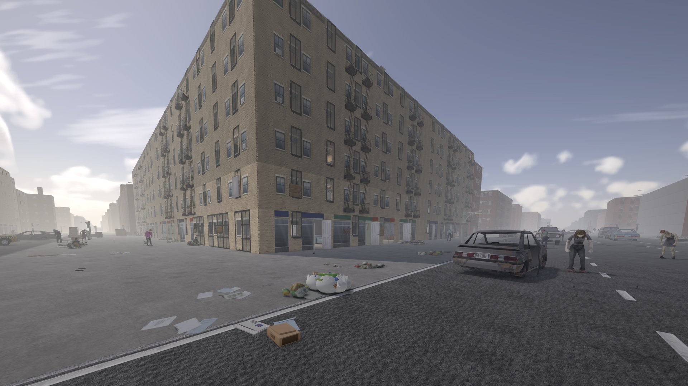
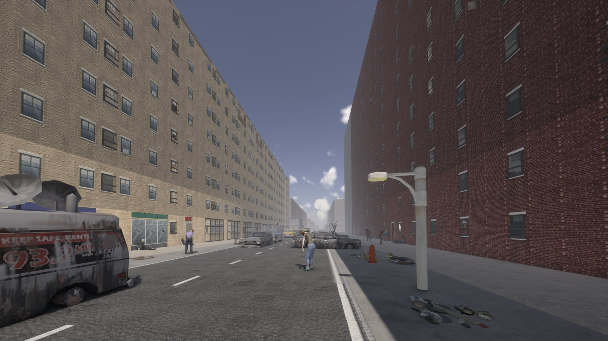
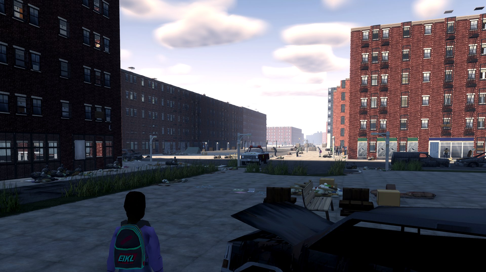
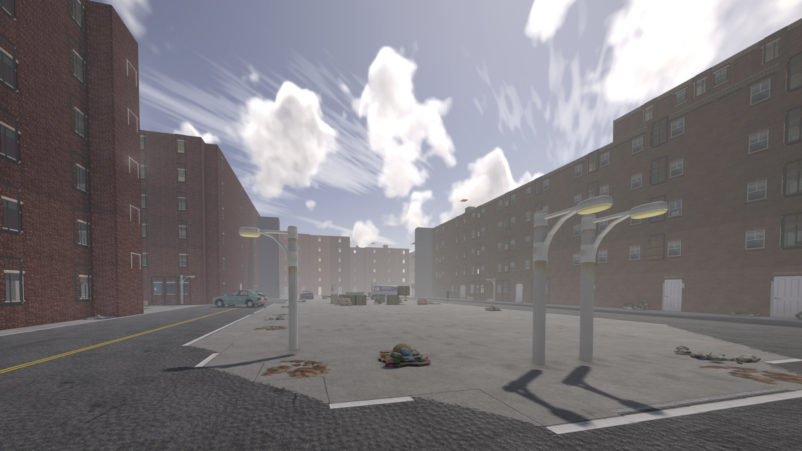
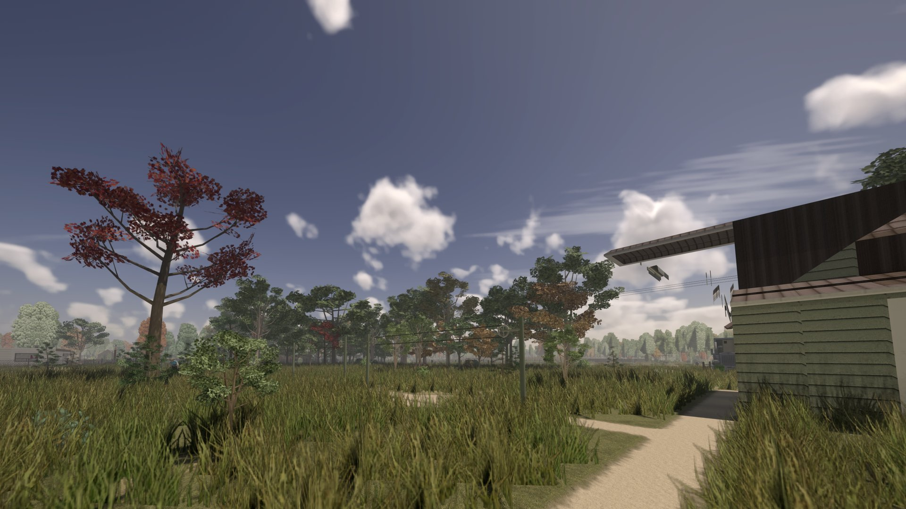
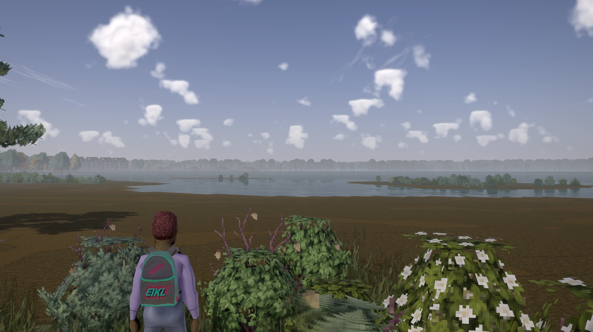
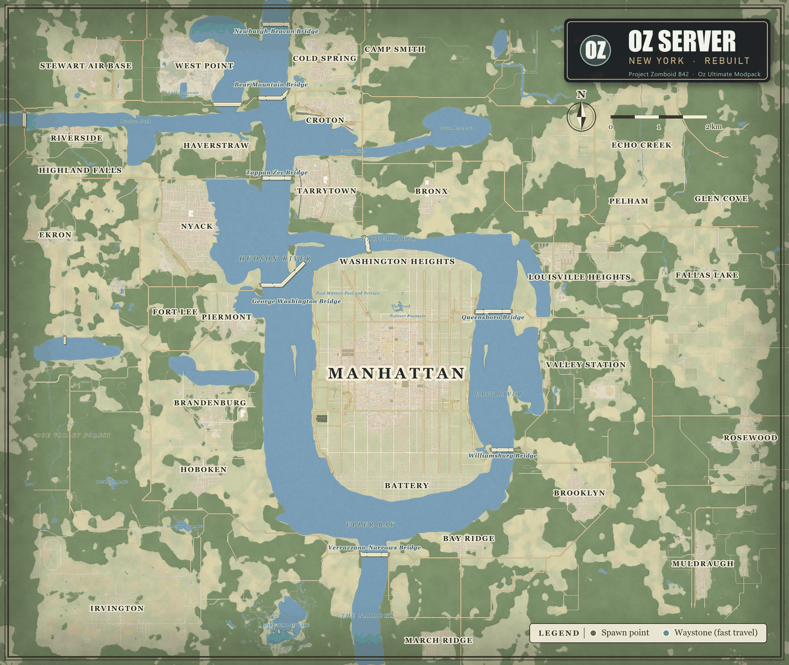

Project Zomboid Build 42 on Project Viewpoint, in first person, in OzNYC World: Manhattan with the Empire State Building, Chrysler, Times Square and Central Park, the Brooklyn Bridge, the Hudson Valley up to West Point and Bear Mountain, Brooklyn, Queens, the Bronx and Hoboken. New world wiped Nov 10. One Steam collection installs the map and the mods; the Viewpoint nightly comes from the Project Viewpoint Discord.
New York for Project Viewpoint: walk Manhattan in first person. HD walls and terrain, HD cars and gear, 3D models, 3D doors and Blood FX load on Project Zomboid 42.22.2.
Manhattan with the Empire State Building, Chrysler, Times Square and Central Park, the Brooklyn Bridge, the Hudson Valley up to West Point and Bear Mountain, Brooklyn, Queens, the Bronx, Hoboken, 19 bridges and the island estate. Real hand-built blocks from vanilla and credited Workshop maps.
183 Workshop items: the OzNYC World map, Oz facades and street kit, Oz Street 3D models, HD gear and car textures, Oz's Photon Shaders, and Project Viewpoint add-ons and mods from other authors. Every author is credited on their own page.
The server is public and PVPVE, free to join, with no password. Safehouses and looted rooms are kept across server restarts. Waystones mark PvP zones.
Home teleport (/sethome and /home), /back, waystones, Fast Boot, and named spawns for six Midtown districts and every town. You start in a zombie-free market hall with 10 traders and $500.
World wiped Nov 11, 2026 (map 3.0.17), on Project Zomboid 42.22.2 with the Project Viewpoint 0.1.7-rc4 nightly. Help, rules and news on the Discord.
First download Viewpoint-nightly-0.1.7-rc4.zip from the Project Viewpoint Discord (#nightly-access) into your Downloads folder. Then paste the matching prompt into Claude: the first for Claude Code, the second for the Claude desktop app (needs computer use enabled). It checks the zip, installs it after you verify the game files, has you subscribe to the collection (Subscribe to all) and explains the first join.
OzNYC World 3.0.17 (world wipe, Nov 11, 2026). Needs Oz NYC Facades (it carries the Oz Structures tiles); Oz Street 3D carries the 3D models. Both come with the collection.
Full list on the map page.
Viewpoint-nightly-0.1.7-rc4.zip from the Project Viewpoint Discord (#nightly-access) and follow its install steps. Use rc4 exactly. The Steam version of Viewpoint (0.1.6.x) cannot join. The zip the server was built against has SHA-256 4f42cdcbe0452d16f205efa71066c9fff0b99e58a7de4adfe81d14978a8b5456 (check with certutil -hashfile Viewpoint-nightly-0.1.7-rc4.zip SHA256); do not install a file that does not match.208.75.182.159 port 28090, no password. On your first join, click a spawn icon on the map.python oz_pc_tune.py --dry-run and read the table of current vs recommended values. To apply, run python oz_pc_tune.py (as Administrator to include GPU scheduling) and type YES yourself; it backs up every file it changes and python oz_pc_tune.py --undo restores them. Steam\steamapps\common\ProjectZomboid\ProjectZomboid64.json set -Xmx to 8g (the same value the script writes; on a 16 GB PC expect stutter, most of the game's memory is outside the Java heap). Windows Settings > System > Display > Graphics: turn on Hardware-accelerated GPU scheduling (reboot) and add ProjectZomboid64.exe with High performance. NVIDIA: with NVIDIA Profile Inspector run nvidiaProfileInspector.exe -silentImport oz_pz_profile.nip (max performance power mode, threaded optimization on). Steam "Verify integrity of game files" resets the json, so redo the heap after it.ZombieBuddy (the Java loader Viewpoint needs): if it is not set up on your PC yet, run ZombieBuddyInstaller.exe and choose Both. If loading seems to pause, alt-tab: ZombieBuddy may be asking you to approve a mod (the list of Oz Workshop Java mods; Java mods run with full rights on your PC, so leave anything you do not recognise unticked). Tick Allow, then OK.
If the join fails with "server failed to respond" right after an Oz update, let Steam finish downloading and try again a few minutes later.
Crash on load? Unsubscribe from "Project Viewpoint - Actual Door Rattling" and "Visceral Viewpoint"; both break Viewpoint 0.1.7. For any other crash, send your Zomboid\console.txt on the Discord.
Advanced (Claude Code, also pre-approves the Java mods and tunes your PC):
Requirements first, I do the Steam steps myself: Project Zomboid must be on the Default Public Version (42.22.2) with Verify integrity of game files done BEFORE the Viewpoint install, and Viewpoint-nightly-0.1.7-rc4.zip (from the Project Viewpoint Discord, #nightly-access) must be in my Downloads folder. Install it by extracting its Viewpoint folder to %USERPROFILE%\Zomboid\Workshop\Viewpoint (rename an existing one to Viewpoint.bak-<today's date> first, and ask me before renaming). Then: Set up Project Zomboid (Build 42) to join the Oz Server on Windows. 1) Open steam://url/CommunityFilePage/3819427155 and have me click Subscribe to all, then wait for Steam to finish downloading. 2) Install ZombieBuddy into my Project Zomboid folder with ZombieBuddyInstaller.exe from https://github.com/zed-0xff/ZombieBuddy/releases (latest), and make sure the Steam launch options contain -agentlib:zbNative -- . 3) With the game closed, add the server to my list: in %USERPROFILE%\Zomboid\db\ServerListSteam.db (back it up first; if it does not exist, have me start the game to the main menu once and quit) run INSERT INTO server(name,ip,port,serverPassword) SELECT 'Oz Server','208.75.182.159',28090,'' WHERE NOT EXISTS (SELECT 1 FROM server WHERE ip='208.75.182.159' AND port=28090). 4) Download https://evrenozdogan.github.io/oz-server/tools/oz_zb_allow_pack.py and https://evrenozdogan.github.io/oz-server/tools/oz_zb_allow_list.json into one folder and read the script. With the game closed, run python oz_zb_allow_pack.py --dry-run and show me its whole table (each Java mod jar with its Workshop item name and what would happen to it). Do not answer its YES question for me: I will run python oz_zb_allow_pack.py myself and type YES only if I agree (it can only pre-approve the Oz Server's own list of Java mods, pinned to reviewed file hashes; anything else is left to ZombieBuddy's own window). 5) Optional performance setup: download https://evrenozdogan.github.io/oz-server/tools/oz_pc_tune.py and https://evrenozdogan.github.io/oz-server/tools/oz_pz_profile.nip into one folder and read the script. With the game closed, run python oz_pc_tune.py --dry-run and show me its whole table (Java heap size for my RAM, Windows GPU scheduling and graphics preference for the game, NVIDIA profile steps, each with current vs recommended). Do not answer its YES question for me: I will run python oz_pc_tune.py myself and type YES only if I agree (it backs up every file it changes and python oz_pc_tune.py --undo restores them). 6) Tell me to unsubscribe from "Project Viewpoint - Actual Door Rattling" and "Visceral Viewpoint" if I have them (they crash Viewpoint 0.1.7). 7) Change nothing else. Then tell me: start the game, Multiplayer, pick Oz Server, choose a username and password, join, click Install on the Workshop list, and if the ZombieBuddy approval window still shows rows, read them and tick Allow only on mods from the Oz Server's Workshop list (an updated Oz mod shows up here again; anything you do not recognise, leave unticked).
Controls: O first person · Q/E lean · hold crouch = prone · Space vault · Delete graphics. Requirements: Windows. Recommended: 8-core CPU, 32 GB RAM, 12 GB+ video memory. Tuned on an RTX 5070 Ti (16 GB), Ryzen 7 9800X3D, 32 GB RAM at 4K; the game used about 10 to 12 GB of video memory in our tests. macOS and Intel Arc are not supported by Viewpoint.
208.75.182.159:28090
VersionProject Zomboid 42.22.2 · Project Viewpoint 0.1.7-rc4 nightly (Project Viewpoint Discord, #nightly-access)
ModePVPVE · public · no password
MapOzNYC World 3.0.17 (world wiped Nov 11, 2026)
ModpackSteam collection (183 Workshop items)
Discorddiscord.gg/v6JMDRYfX8
HostingIndifferent Broccoli server page






Manhattan with the Empire State Building, Chrysler, Times Square and Central Park, the Brooklyn Bridge, the Hudson Valley up to West Point and Bear Mountain, Brooklyn, Queens, the Bronx, Hoboken, the harbour cranes, prison, courthouse, 19 bridges and the island estate. Fast travel between the waystones you have found.

Also: Oz Server Pack · Oz Home · Oz Server Tweaks · Oz's Photon Shaders · Oz Fast Boot · Oz NYC Facades · Oz Street 3D · Oz HD Cars (4x vehicle textures) · Oz HD Gear (weapons, clothing textures)